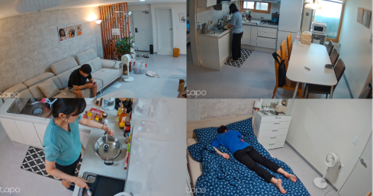
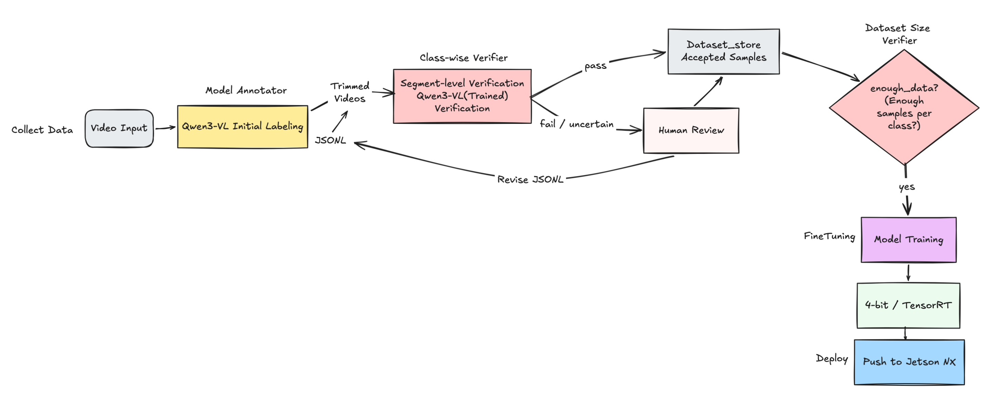
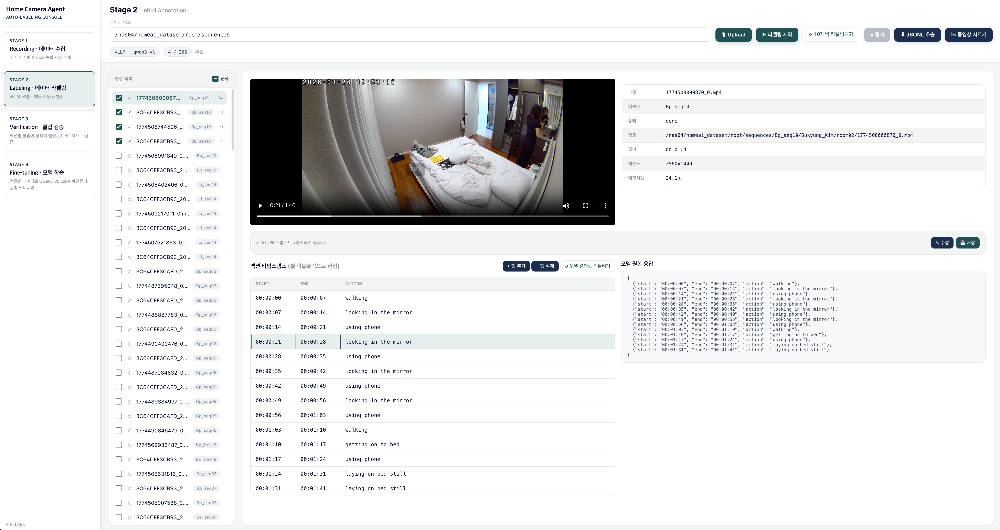
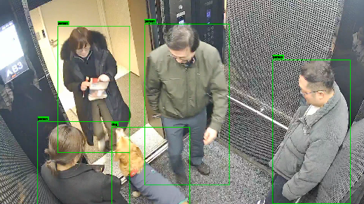
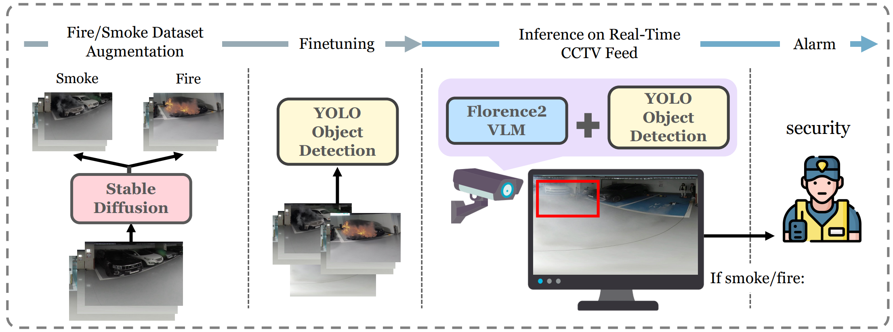

HDC LABS
VLM / LLM
Video Understanding
Multimodal AI
업무 및 활동Work & Activities
-
2024.09 – 2025.04지하주차장 화재 탐지 모델 개발Underground Parking Fire DetectionAI 엔지니어AI Engineer
-
2025.02 – 2025.03
-
2025.06 ~차세대 홈 AI Agent 시스템Next-Gen Home AI Agent SystemAI 엔지니어AI Engineer
-
2024 – 2026지적재산권 확보Intellectual Property발명자Inventor특허 6건 등록 · 1건 출원, 국제 학회 논문 4편6 patents granted · 1 application, 4 papers at international venues
프로젝트Projects
프로젝트를 선택하면 아래에 상세 내용이 표시됩니다 Select a project to view its details below
차세대 홈 AI Agent 시스템 (2025.06 ~ 진행 중) Next-Gen Home AI Agent System (2025.06 ~ Present)
핵심 역할Key role
기여도 35% — 프로젝트 매니징, 데이터셋 구축, 행동 인식 모델링, 통합 파이프라인 개발, 엣지 배포35% contribution — project management, dataset construction, action-recognition modeling, integrated pipeline development, edge deployment
적용 환경Environment실제 주거 공간 (거실·방·부엌) · 모델하우스Real living spaces (living room/bedroom/kitchen) · model house
연동 대상Integration카메라·IoT 가전·월패드 (자체 플랫폼)Cameras, IoT appliances, wall pad (in-house platform)
핵심 기능Core featuresVideoLLM 기반 행동·물체·얼굴 인식 + LLM 에이전트 개인화·가전 제어VideoLLM-based action/object/face recognition + LLM-agent personalization & appliance control
목표Goal실제 주거 환경에서 안정 동작하는 Vision AI 시스템 · 모델하우스 시범 운영A Vision AI system that runs reliably in real homes · model-house pilot
협업Collaboration인프라파트(DB·월패드), NLP파트(LLM 에이전트), 온디바이스 담당Infra (DB/wall pad), NLP (LLM agent), on-device teams
1데이터셋 구축Dataset Construction
담당 업무Responsibilities
- 집안 행동 오픈소스 데이터 부족 문제를 해결하기 위해 실제 주거 공간에서 거주자 행동을 직접 촬영, 600개 이상 영상을 65개 이상 액션으로 정의·라벨링
- 클래스 중첩·라벨링 모호성을 반복 검토하며 15개 핵심 클래스로 재정의 → 최종 공식 데이터셋(648개, 2560×1440) 릴리즈
- To address the scarcity of open-source in-home action data, filmed resident actions directly in real living spaces and defined/labeled 600+ videos into 65+ actions
- Iteratively reviewed class overlap and labeling ambiguity, consolidating to 15 core classes → released the final official dataset (648 clips, 2560×1440)

2모델·알고리즘 제안Model & Algorithm
담당 업무Responsibilities
- 학습 데이터가 부족한 상황에서 VideoLLM(Qwen-VL, VideoLLaMA3)으로 영상을 액션 분류, 액션 클래스를 동적으로 교체할 수 있도록 프롬프트 엔지니어링
- 프롬프트를 "상위 3개 → 단일 1개 선택"으로 변경해 정확도 65% → 81% 개선 (가장 큰 성능 개선 요인)
- 로딩·양자화 방식 비교를 통해 HF Transformers + 4bit + NF4 조합을 성능·속도 최적값으로 확립
- With limited training data, classified video actions using VideoLLMs (Qwen-VL, VideoLLaMA3), with prompt engineering to swap action classes dynamically
- Changing the prompt from "top-3 → single-1 selection" improved accuracy from 65% to 81% (the single biggest gain)
- Established HF Transformers + 4-bit + NF4 as the performance/speed optimum through loading and quantization comparisons
3시스템 아키텍처 통합System Architecture Integration
담당 업무Responsibilities
- Camera/RTSP → 전처리 → VideoLLM 추론 → DB → AI Agent로 이어지는 비동기 실시간 파이프라인 구성
- 다중 카메라·다중 모델 환경의 GPU 메모리 과부하·지연 문제를 멀티프로세싱·멀티스레딩·배치 처리로 해결
- Kafka 기반으로 "의미 있는 상태 변화"만 전달 (개인화 로그는 저빈도·장기 저장, 행동 이벤트는 고빈도·실시간 처리)
- Built an asynchronous real-time pipeline: Camera/RTSP → preprocessing → VideoLLM inference → DB → AI Agent
- Resolved GPU memory overload and latency in multi-camera/multi-model settings via multiprocessing, multithreading, and batching
- Published only "meaningful state changes" over Kafka (personalization logs: low-frequency long-term storage; action events: high-frequency real-time)
4엣지 배포Edge Deployment
담당 업무Responsibilities
- 온디바이스 담당자와 함께 Jetson NX에 적용 가능한 모델을 실험하고, 그중 가장 효과적인 4bit NF4 양자화 모델을 선정·탑재
- RK3576 카메라와 실시간 연동까지 이어지도록 프로젝트 매니징 수행
- Experimented with the on-device engineer on models deployable to Jetson NX, then selected and loaded the most effective 4-bit NF4 quantized model
- Project-managed the work so it could integrate with an RK3576 camera in real time
업무 성과Achievements
- 5초 영상 기준 평균 4.2초 내 처리로 실시간 처리 가능성 확인 (액션 정확도 0.71)
- Confirmed real-time feasibility — 4.2s average processing for a 5s clip (action accuracy 0.71)
5데이터 수집·라벨링 자동화 툴 개발Data Collection & Labeling Automation Tool
담당 업무Responsibilities
- 촬영 → 1차 자동 라벨링 → 클래스별 검증 → 학습 → 배포로 이어지는 5단계 자동화 파이프라인 개발
- Qwen3-VL 초기 라벨링 후 검증 단계에서 통과·사람 검수로 분기하는 구조로 데이터 확보·라벨링 비용 절감
- Built a 5-stage automation pipeline: filming → initial auto-labeling → per-class verification → training → deployment
- After Qwen3-VL initial labeling, branched into pass/human-review at verification, cutting data-acquisition and labeling cost


성과Achievements
- 행동 인식 기반 IoT 가전 제어 등 관련 기술 특허 확보KR 10-2971047
- 모델하우스 시범 운영용 4-카메라 Vision AI 시스템 구현 및 데이터 자동 라벨링 툴 개발
- Secured related-technology patents, including action-recognition-based IoT appliance controlKR 10-2971047
- Implemented a 4-camera Vision AI system for the model-house pilot and built a data auto-labeling tool
기술 스택Tech stack
VideoLLMLLM Prompt EngineeringFine-tuning4bit / NF4Jetson NXKafkaPythonProject Management
엘리베이터 내부 상황 분석 시스템 PoC (2025.02 – 2025.03) In-Elevator Situational Analysis System PoC (2025.02 – 2025.03)
핵심 역할Key role
기여도 30% — 반려견 탑승 인식 모델 및 알고리즘 개발30% contribution — pet-boarding detection model & algorithm
적용 환경Environment엘리베이터 카 내부 상단 모서리 CCTV 시점Inside the elevator car, top-corner CCTV viewpoint
핵심 기능Core featuresVLM 파인튜닝 기반 반려견 탑승 인식 + 목줄 끼임 사고 예방 알고리즘VLM-fine-tuned pet-boarding detection + leash-entrapment prevention algorithm
목표Goal승강기 혼잡도·대기 시간 감소, 이상 행동 탐지, 반려견 목줄 끼임 사고 예방 AI 운영 시스템An AI operation system that reduces congestion/wait time, detects anomalies, and prevents pet-leash entrapment
협업Collaboration현대엘리베이터Hyundai Elevator

1반려견 탑승 인식 모델 및 알고리즘 개발Pet-Boarding Detection Model & Algorithm
기존 문제점Problem
- 엘리베이터 CCTV는 상단 모서리에서 내려다보는 비정형 시야각을 가지며, 기존 모델로는 반려견의 탑승 여부를 정확히 판단하기 어려움
- Elevator CCTVs use an atypical top-corner viewpoint, making pet-boarding judgments unreliable with off-the-shelf models
담당 업무Responsibilities
- 탑승 데이터 수집 및 구축 — 실제 엘리베이터 환경에서 촬영된 반려견 탑승 영상을 수집·정제·라벨링하고, 엘리베이터 CCTV 시점 기반 생성형 반려견 합성 데이터를 추가해 학습 데이터셋 확장
- VLM 기반 모델 파인튜닝 — 수집한 데이터를 기반으로 VLM을 object detection 태스크에 맞게 커스터마이징하고, 엘리베이터 환경 특성을 반영해 모델 학습
- 탑승 시점 판단 알고리즘 개발 — 문 열림/닫힘 시점을 기준으로 사람과 반려견의 동시 탑승 여부를 판단하는 알고리즘을 구현, 반려견 목줄 끼임 사고를 예방하도록 설계
- Boarding data construction — collected, cleaned, and labeled real in-elevator pet videos, and extended the training set with generative synthetic pet data rendered from the elevator-CCTV viewpoint
- VLM fine-tuning — customized a VLM for the object-detection task and trained it to reflect elevator-environment characteristics
- Boarding-moment algorithm — implemented door open/close-based logic that judges simultaneous boarding of a person and a pet, designed to prevent leash-entrapment accidents
업무 성과Achievements
- 반려견 탑승 탐지 정확도 57% → 87.5% 향상
- 반려견과 유사 객체(인형 등) 구분 정확도 91% 달성
- '사용자로그를 고려한 엘리베이터 내부의 반려동물 유무 탐지방법 및 시스템' 특허 등록KR 10-2876730
- HDC랩스·HDC현대산업개발·현대엘리베이터 업무 협약 체결HDC현산, 서울원 아이파크에 AI 승강기 도입 ↗
- 합성 데이터 생성 연구로 후속 논문 게재합성 데이터 생성 자동화 (WACVW 2026, Oral)
- Improved pet-boarding detection accuracy from 57% to 87.5%
- Achieved 91% accuracy in distinguishing pets from similar objects (e.g., plush toys)
- Patent granted: detecting pets inside an elevator considering user logsKR 10-2876730
- Three-party MOU among HDC LABS, HDC Hyundai Development, and Hyundai ElevatorHDC to deploy AI elevators at Seoul One IPARK ↗
- Follow-up paper from the synthetic-data researchAutomated synthetic data generation (WACVW 2026, Oral)
지하주차장 화재 탐지 모델 개발 (2024.09 – 2025.04) Underground Parking Fire Detection (2024.09 – 2025.04)
핵심 역할Key role
기여도 40% — VLM 통합 알고리즘 개발, VLM 모델 비교 선정40% contribution — VLM-integrated algorithm, VLM model benchmarking & selection
적용 환경Environment지하주차장 (전기차 충전구역)Underground parking (EV charging zone)
연동 대상Integration자체 플랫폼In-house platform
핵심 기능Core featuresYOLO 기반 연기/불 탐지 + VLM 기반 상황 인식YOLO-based smoke/fire detection + VLM-based situational awareness
목표Goal화재 예방과 신속한 대응을 위한 AI CCTV 화재 탐지 솔루션 개발An AI CCTV fire-detection solution for prevention and rapid response
협업Collaboration수호이미지랩스(CCTV 전문기업)Suho Image Labs (CCTV specialist)

1VLM 모델 통합 알고리즘 개발VLM-Integrated Detection Algorithm
기존 문제점Problem
- YOLO 모델은 실시간 처리와 객체 위치 탐지에 강점이 있으나, 연기·초기 화염 단계에서는 정확도 및 민감도(Recall)가 낮은 한계 존재
- YOLO excels at real-time localization but suffers low accuracy and recall on smoke and early-stage flames
담당 업무Responsibilities
- 연산량은 크지만 정밀한 판단이 가능한 VLM을 병렬적으로 활용하는 상황 인식 구조 도입
- YOLO는 모든 프레임에 대해 추론을 수행하여 실시간성 유지, VLM은 초당 3프레임만 선택적으로 추론하도록 설정해 연산 자원 사용 최소화
- VLM이 화재 가능성을 먼저 인지한 경우 YOLO의 confidence threshold를 동적으로 조정해 더 민감하게 화재를 탐지하도록 유도
- Introduced a situational-awareness structure that runs a compute-heavy but precise VLM in parallel with YOLO
- Kept YOLO inferring on every frame for real-time coverage while limiting the VLM to 3 selected frames per second to minimize compute
- When the VLM first senses a possible fire, it dynamically lowers YOLO's confidence threshold so YOLO detects fire more sensitively
2VLM 모델 비교 선정VLM Benchmarking & Selection
담당 업무Responsibilities
- BLIP1, BLIP2, LLaVA2, Gemma3, VideoLLaMA 등 다양한 VLM을 대상으로 FPS·정확도·탐지 지연 시간·모델 크기 기준 비교 실험 수행
- 지하주차장 서버 환경의 연산 자원 제약과 실시간 요구 조건을 종합 고려해 화재 탐지 성능과 처리 속도가 가장 적합한 Florence2를 최종 모델로 선정
- 환경 및 하드웨어 조건 변화에 따라 최적 모델을 선택할 수 있도록 다양한 VLM에 대한 비교 분석 지속 수행
- Benchmarked VLMs including BLIP1, BLIP2, LLaVA2, Gemma3, and VideoLLaMA on FPS, accuracy, detection latency, and model size
- Selected Florence2 as the final model — the best fire-detection performance and throughput under the parking-server compute constraints and real-time requirements
- Continuously re-evaluating VLMs so the optimal model can be chosen as environments and hardware change
업무 성과Achievements
- 최초 화재 탐지 시간 단축 — 6.51s → 3.03s
- Recall 0.835 → 0.904 향상
- ICLR 2025 워크샵 ICBINB 논문 게재An Integrated YOLO and VLM System for Fire Detection in Enclosed Environments (ICLRW 2025)
- '인공신경망 기반의 복합모델을 이용한 주차장 화재 탐지 방법 및 시스템' 특허 등록KR 10-2857163
- 광명 센트럴 아이파크 지하주차장 화재 탐지 AI CCTV 상용 도입
- Cut first fire-detection time from 6.51s to 3.03s
- Improved recall from 0.835 to 0.904
- Published at the ICLR 2025 ICBINB workshopAn Integrated YOLO and VLM System for Fire Detection in Enclosed Environments (ICLRW 2025)
- Patent granted: parking-lot fire detection using an ANN-based composite modelKR 10-2857163
- Commercial deployment in the underground parking AI CCTV at Gwangmyeong Central IPARK